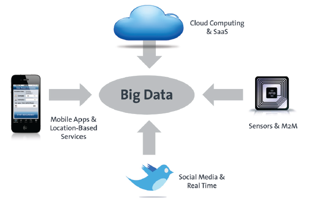

Bitkom (2012) Big Data im Praxiseinsatz - Szenarien, Beispiele, Effekte
Typische Quellen

Bitkom (2012) Big Data im Praxiseinsatz - Szenarien, Beispiele, Effekte
Definition Big Data
McKinsey&Company
Big data refers to datasets whose size is beyond the ability of typical database software tools to capture, store, manage, and analyze.
o.V (2011) Big data: The next frontier for innovation, competition, and productivity. McKinsey Global Institute
Gartner
Big data is high-volume, high-velocity and high-variety information assets that demand cost-effective, innovative forms of information processing for enhanced insight and decision making.
www.gartner.com/it-glossary/big-data/
Big Data Kontext
Bitkom (2012) Big Data im Praxiseinsatz - Szenarien, Beispiele, Effekte